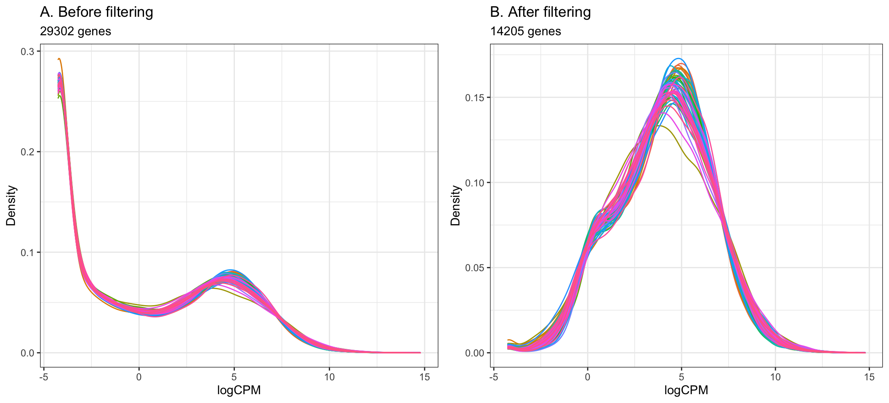
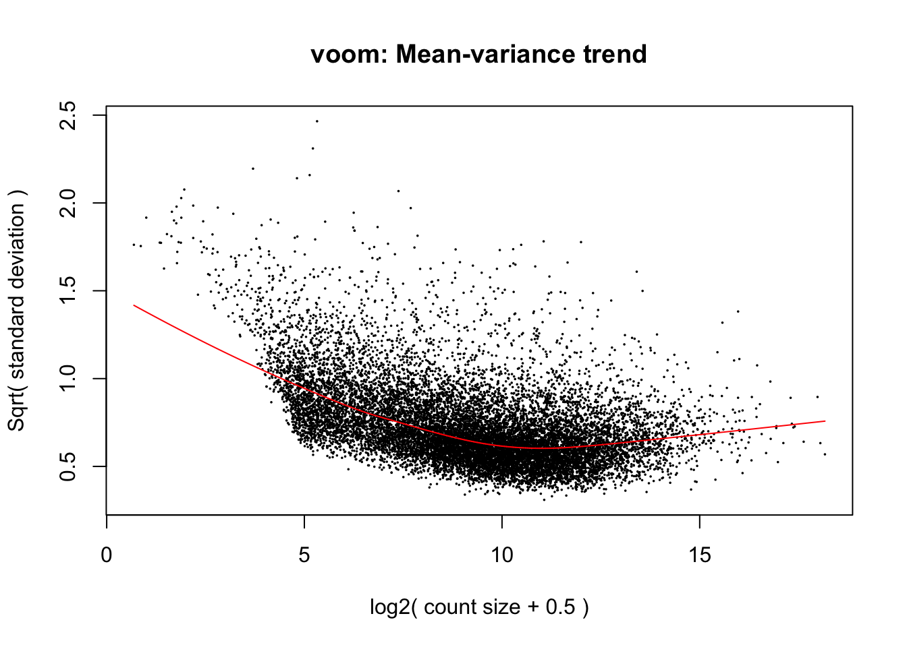
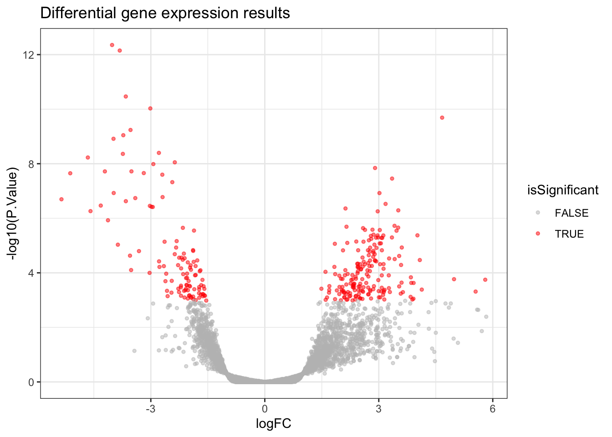
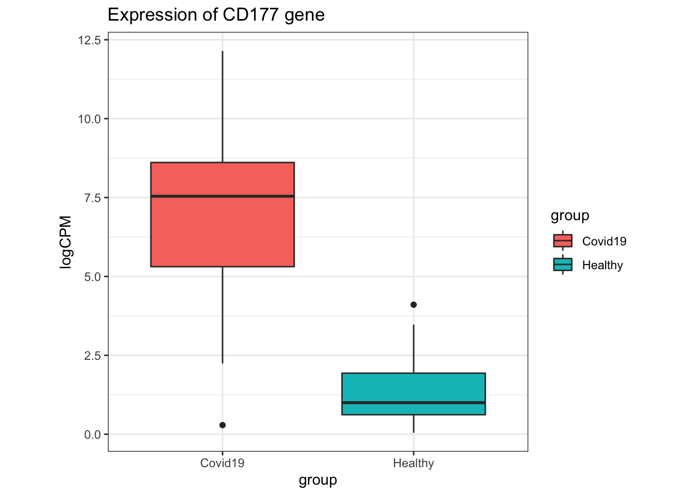
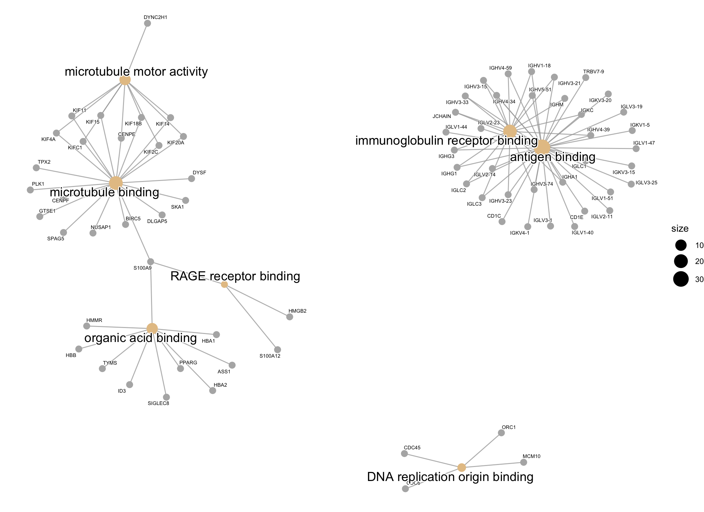

Last updated: 2021-07-02
Checks: 7 0
Knit directory: Bulk_RNAseq/
This reproducible R Markdown analysis was created with workflowr (version 1.6.2). The Checks tab describes the reproducibility checks that were applied when the results were created. The Past versions tab lists the development history.
Great! Since the R Markdown file has been committed to the Git repository, you know the exact version of the code that produced these results.
Great job! The global environment was empty. Objects defined in the global environment can affect the analysis in your R Markdown file in unknown ways. For reproduciblity it’s best to always run the code in an empty environment.
The command set.seed(20210629) was run prior to running the code in the R Markdown file. Setting a seed ensures that any results that rely on randomness, e.g. subsampling or permutations, are reproducible.
Great job! Recording the operating system, R version, and package versions is critical for reproducibility.
Nice! There were no cached chunks for this analysis, so you can be confident that you successfully produced the results during this run.
Great job! Using relative paths to the files within your workflowr project makes it easier to run your code on other machines.
Great! You are using Git for version control. Tracking code development and connecting the code version to the results is critical for reproducibility.
The results in this page were generated with repository version ed2fe3c. See the Past versions tab to see a history of the changes made to the R Markdown and HTML files.
Note that you need to be careful to ensure that all relevant files for the analysis have been committed to Git prior to generating the results (you can use wflow_publish or wflow_git_commit). workflowr only checks the R Markdown file, but you know if there are other scripts or data files that it depends on. Below is the status of the Git repository when the results were generated:
Ignored files:
Ignored: .DS_Store
Ignored: .Rhistory
Ignored: .Rproj.user/
Ignored: analysis/.DS_Store
Ignored: data/.DS_Store
Ignored: output/.DS_Store
Ignored: renv/library/
Ignored: renv/local/
Ignored: renv/staging/
Untracked files:
Untracked: code/
Unstaged changes:
Modified: output/GO_network.pdf
Note that any generated files, e.g. HTML, png, CSS, etc., are not included in this status report because it is ok for generated content to have uncommitted changes.
These are the previous versions of the repository in which changes were made to the R Markdown (analysis/de.Rmd) and HTML (docs/de.html) files. If you’ve configured a remote Git repository (see ?wflow_git_remote), click on the hyperlinks in the table below to view the files as they were in that past version.
| File | Version | Author | Date | Message |
|---|---|---|---|---|
| Rmd | ed2fe3c | Nhi Hin | 2021-07-02 | wflow_publish("analysis/*.Rmd") |
| html | 66b2c36 | Nhi Hin | 2021-07-02 | Build site. |
| Rmd | 9b94e39 | Nhi Hin | 2021-07-02 | wflow_publish("analysis/*.Rmd") |
| html | f62ae4f | Nhi Hin | 2021-06-30 | Build site. |
| Rmd | 1d1160f | Nhi Hin | 2021-06-30 | wflow_publish("analysis/*.Rmd") |
Covid19 and Healthy samples. The steps involved are:Importing in the DGEList object prepared in the Setting Up page.
Filtering of low expressed genes to increase our power to detect differentially expressed genes.
Identifying differentially expressed genes using the limma package.
Visualisation of differentially expressed genes using volcano plots and boxplots.
GO enrichment analysis of differentially expressed genes to explore their biological significance, including network plot visualisation.
# Working with data:
library(dplyr)
library(magrittr)
library(readr)
library(tibble)
library(reshape2)
# Visualisation:
library(kableExtra)
library(ggplot2)
library(ggbiplot)
library(ggrepel)
library(grid)
library(cowplot)
# Set ggplot2 theme
theme_set(theme_bw())
# Other packages:
library(here)
library(export)
# Bioconductor packages:
library(AnnotationHub)
library(edgeR)
library(limma)
library(Glimma)
library(clusterProfiler)
library(org.Hs.eg.db)
library(enrichplot)dge, which was prepared in the Setting Up page. This object contains: gene counts, sample metadata, and gene annotations. Unfortunately we don’t have time to cover this in detail, but please at least skim through the Setting Up page to understand how we have imported the data in and gotten it into this format.dge <- readRDS(here("data", "R", "dge.rds"))dge object can be accessed using dge$counts, and we can preview the first 5 rows and columns as follows. Each row represents one gene and the columns represent different samples.dge$counts[1:5,1:5] Healthy_1 Healthy_2 Healthy_3 Healthy_4 Healthy_5
A1BG 133.14360 110.14223 94.68670 89.60004 85.81497
A1CF 9.00000 8.00000 1.00000 10.00020 3.00000
A2M 65.00001 31.72058 36.63567 19.22508 27.99998
A2ML1 29.28124 26.30470 20.57935 13.00000 5.00000
A2MP1 262.00034 83.00004 98.99997 55.99998 41.00000dge object can be accessed using dge$samples, and we can preview the first 5 rows and columns as follows. Each row represents one sample and the columns represent information/characteristics about the samples.dge$samples[1:5,1:5] group lib.size norm.factors patient_code age
Healthy_1 Healthy 40594184 1.139493 507-V 53
Healthy_2 Healthy 36139025 1.127571 1189-V 57
Healthy_3 Healthy 29466261 1.180684 1406-V 61
Healthy_4 Healthy 33691447 1.080104 1918-V 56
Healthy_5 Healthy 33097717 1.012251 1951-V 57dge object can be accessed using dge$genes, and we can preview the first 5 rows and columns as follows. Each row represents one gene and the columns represent information about that gene.dge$genes[1:5,1:5] gene seqnames start end width
A1BG A1BG 19 58345178 58353492 8315
A1CF A1CF 10 50799409 50885675 86267
A2M A2M 12 9067664 9116229 48566
A2ML1 A2ML1 12 8822621 8887001 64381
A2MP1 A2MP1 12 9228533 9275817 47285To understand the contents of these objects better, try viewing them using the View() function, i.e. View(dge$genes) or View(dge$samples).
The nrow() and ncol() functions can be used to know the number of rows and columns in these objects, e.g.
nrow(dge$samples) # Number of samples[1] 54Filtering of low-expressed genes is a standard step in differential gene expression analysis as it helps to increase the power we have to detect differentially expressed genes, by not having to consider those which are expressed at levels too low to be reliable. Please refer to this paper for more background reading.
The cutoff for filtering out low-expressed genes is somewhat arbitrary, and we can decide through plotting density plots like the ones below. Ideally, the filtering should remove the large peak of genes with low expression towards the left of the density plot.
A common guideline is to filter so that we retain genes expressed at least 1 cpm in the smallest group of samples. Here, the smallest group of samples is 10 (we have 10 Healthy samples and 44 Covid-19 samples).
By setting the expression cutoff to 1 cpm in at least 10 samples below, we can see that the peak corresponding to low-expressed genes is successfully largely reduced in the data after filtering.
keepTheseGenes <- (rowSums(cpm(dge) > 1) >= 10)
beforeFiltering_plot <- dge %>%
cpm(log = TRUE) %>%
melt %>%
dplyr::filter(is.finite(value)) %>%
ggplot(aes(x = value, colour = Var2)) +
geom_density() +
guides(colour = FALSE) +
ggtitle("A. Before filtering", subtitle = paste0(nrow(dge), " genes")) +
labs(x = "logCPM", y = "Density")
afterFiltering_plot <- dge %>%
cpm(log = TRUE) %>%
magrittr::extract(keepTheseGenes,) %>%
melt %>%
dplyr::filter(is.finite(value)) %>%
ggplot(aes(x = value, colour = Var2)) +
geom_density() +
guides(colour = FALSE) +
ggtitle("B. After filtering", subtitle = paste0(table(keepTheseGenes)[[2]], " genes"))+
labs(x = "logCPM", y = "Density")
cowplot::plot_grid(beforeFiltering_plot, afterFiltering_plot)
| Version | Author | Date |
|---|---|---|
| f62ae4f | Nhi Hin | 2021-06-30 |
0.1 cpm instead of 1 cpm? What about if the expression cutoff is 1 cpm in 30 samples instead of 10?
- Using the filtering of > 1 cpm in 10 or more samples, the step below filters out 15097 genes from the original 29302 genes, giving the remaining 14205 to be used in the analysis.
dge <- dge[keepTheseGenes,,keep.lib.sizes = FALSE] The aim of differential gene expression analysis is to find genes which are expressed significantly differently in one group compared to another. To determine significance, the method we are using (limma-voom) uses a moderated t-statistic which can be thought of as determining significance similarly to a t-test, but with greater power than a t-test when applied to gene expression data. This is largely due to the ability to “borrow information” across genes for a gene expression dataset (using Bayesian statistics).
Here, the null hypothesis for each gene that a gene is not significantly different due to group (i.e. whether a sample is Covid19 or Healthy). The limma-voom moderated t-test will then give a p-value that can be used to assign statistical significance to whether genes are significantly differentially expressed between Covid19 and Healthy samples.
Please refer to the papers by Ritchie et al. 2015 and Law et al. 2014 for more details about the limma and voom methods respectively.
samples$group, which contains the following:dge$samples$group [1] Healthy Healthy Healthy Healthy Healthy Healthy Healthy Healthy Healthy
[10] Healthy Covid19 Covid19 Covid19 Covid19 Covid19 Covid19 Covid19 Covid19
[19] Covid19 Covid19 Covid19 Covid19 Covid19 Covid19 Covid19 Covid19 Covid19
[28] Covid19 Covid19 Covid19 Covid19 Covid19 Covid19 Covid19 Covid19 Covid19
[37] Covid19 Covid19 Covid19 Covid19 Covid19 Covid19 Covid19 Covid19 Covid19
[46] Covid19 Covid19 Covid19 Covid19 Covid19 Covid19 Covid19 Covid19 Covid19
Levels: Covid19 Healthymodel.matrix function as follows. By previewing the design matrix, we can see that there are 2 groups that have been specified, groupCovid19 and groupHealthy. Each row in the design matrix is a sample, and a 0 or 1 indicates which group the sample belongs to.design <- model.matrix(~0 + group, data = dge$samples)
design groupCovid19 groupHealthy
Healthy_1 0 1
Healthy_2 0 1
Healthy_3 0 1
Healthy_4 0 1
Healthy_5 0 1
Healthy_6 0 1
Healthy_7 0 1
Healthy_8 0 1
Healthy_9 0 1
Healthy_10 0 1
Covid19_1 1 0
Covid19_2 1 0
Covid19_3 1 0
Covid19_4 1 0
Covid19_5 1 0
Covid19_6 1 0
Covid19_7 1 0
Covid19_8 1 0
Covid19_9 1 0
Covid19_10 1 0
Covid19_11 1 0
Covid19_12 1 0
Covid19_13 1 0
Covid19_14 1 0
Covid19_15 1 0
Covid19_16 1 0
Covid19_17 1 0
Covid19_18 1 0
Covid19_19 1 0
Covid19_20 1 0
Covid19_21 1 0
Covid19_22 1 0
Covid19_23 1 0
Covid19_24 1 0
Covid19_25 1 0
Covid19_26 1 0
Covid19_27 1 0
Covid19_28 1 0
Covid19_29 1 0
Covid19_30 1 0
Covid19_31 1 0
Covid19_32 1 0
Covid19_33 1 0
Covid19_34 1 0
Covid19_35 1 0
Covid19_36 1 0
Covid19_37 1 0
Covid19_38 1 0
Covid19_39 1 0
Covid19_40 1 0
Covid19_41 1 0
Covid19_42 1 0
Covid19_43 1 0
Covid19_44 1 0
attr(,"assign")
[1] 1 1
attr(,"contrasts")
attr(,"contrasts")$group
[1] "contr.treatment"The voom transformation is applied to the gene count data, transforming the discrete counts into log2-counts per million (logCPM). This also estimates the mean-variance relationship and uses this to compute appropriate observation-level weights (genes), while taking into account differences in library sizes between samples. After running voom, the data will then be ready for linear modelling.
The plot below shows the mean-variance relationship that was calculate by voom. Each point on the plot represents a gene. The x-axis shows the mean expression of genes (in log2 CPM values). The y-axis represents the standard deviation (or variance) or a gene. We can see that genes with low expression tend to have higher variance, but there are not a lot of these. The majority of genes in the study have log2 CPM values between ~5 and ~15 log2 CPM.
voomData <- voom(dge, design = design, plot = TRUE)
| Version | Author | Date |
|---|---|---|
| f62ae4f | Nhi Hin | 2021-06-30 |
voom looks normal for this dataset, but sometimes it can be useful for troubleshooting. For an example, see this StackExchange question for an example of what the mean-variance plot looks like if low-expressed genes were not filtered out correctly.Here we define the Contrasts matrix, which contains the pairwise comparisons which we wish to test.
In this experiment, we are interested in the changes in groupCovid19 relative to groupHealthy, so we will specify this as groupCovid19 - groupHealthy.
contrasts <- makeContrasts(
levels = colnames(design),
covid_vs_healthy = groupCovid19 - groupHealthy
)
contrasts Contrasts
Levels covid_vs_healthy
groupCovid19 1
groupHealthy -1A linear model is now fitted for each gene, using the voomData logCPM for each gene, the design containing the experimental design, and the contrasts which specify the pairwise comparisons to be tested.
The treat step applies Bayesian statistics to “borrow” information across the individual moderated t-tests for each gene, increasing our power to detect differentially expressed genes. In this particular experiment, we will require genes to have an absolute log2 fold change greater than 1 (fold change < -2 or > 2) to be considered differentially expressed.
fit <- lmFit(voomData, design) %>%
contrasts.fit(contrasts) %>%
treat(lfc = 1)Multiple testing correction is required every time we are performing multiple hypothesis tests, to minimise the amount of false positives we get. Please see this pdf for background reading.
In this analysis, we will use the False Discovery Rate (FDR) method to perform multiple testing correction, and set the significance cutoff at 0.05. This means that only genes with FDR-adjusted p-values < 0.05 AND absolute log2 fold change of 1 or above will be considered significantly differentially expressed.
results <- decideTests(fit,
p.value = 0.05,
adjust.method = "fdr") Up refers to genes with increased expression in Covid19 relative to Healthy while Down refers to genes with decreased expression in Covid19 relative to Healthy.summary(results) covid_vs_healthy
Down 112
NotSig 13906
Up 1872? What about if there is no log2 fold change cutoff? Which one do you think is more “correct”?topTreat function from limma. This gives us a spreadsheet-like table where each row is a gene and the columns contain information including the p-value (P.Value), FDR-adjusted p-value (adj.P.Val), t-statistic (t), log2 fold change (logFC) and more. To view the full table, use View(allDEresults) to understand how the results look at this stage.allDEresults <- topTreat(fit,
coef = "covid_vs_healthy",
number = Inf,
adjust.method = "fdr") %>%
as.data.frame() allDEresults table to just have the ones which we define to be significantly differentially expressed. In this case, significant differential expression means that genes must have FDR-adjusted p-value < 0.05 and absolute log2 fold change greater than 1 (i.e. either logFC < -1 or logFC > 1).allDEresults <- allDEresults %>%
dplyr::mutate(isSignificant = case_when(
adj.P.Val < 0.05 & abs(logFC) > 1 ~ TRUE,
TRUE ~ FALSE # If conditions in the line above are not met, gene is not DE.
))
sigDEresults <- allDEresults %>%
dplyr::filter(isSignificant == TRUE)output folder as CSV spreadsheets (this is useful for sharing data with collaborators):allDEresults %>%
dplyr::select(-entrezid) %>%
readr::write_csv(here("output", "all_DE_results.csv"))
sigDEresults %>%
dplyr::select(-entrezid) %>%
readr::write_csv(here("output", "significant_DE_genes.csv"))View(sigDEresults) or by navigating to the output/significant_DE_genes.csv file.sigDEresults %>%
head(50) %>%
kable %>%
kable_styling() %>%
scroll_box(height="700px")| gene | seqnames | start | end | width | strand | gene_id | gene_name | gene_biotype | seq_coord_system | description | gene_id_version | entrezid | logFC | AveExpr | t | P.Value | adj.P.Val | isSignificant | |
|---|---|---|---|---|---|---|---|---|---|---|---|---|---|---|---|---|---|---|---|
| SLC4A10 | SLC4A10 | 2 | 161424332 | 161985282 | 560951 |
|
ENSG00000144290 | SLC4A10 | protein_coding | chromosome | solute carrier family 4 member 10 [Source:HGNC Symbol;Acc:HGNC:13811] | ENSG00000144290.17 | 57282 | -4.019821 | 0.8642950 | -9.226165 | 0.0e+00 | 0.0000000 | TRUE |
| CACNA2D3 | CACNA2D3 | 3 | 54122547 | 55074557 | 952011 |
|
ENSG00000157445 | CACNA2D3 | protein_coding | chromosome | calcium voltage-gated channel auxiliary subunit alpha2delta 3 [Source:HGNC Symbol;Acc:HGNC:15460] | ENSG00000157445.15 | 55799 | -3.818196 | 0.0032933 | -9.098740 | 0.0e+00 | 0.0000000 | TRUE |
| NRCAM | NRCAM | 7 | 108147623 | 108456717 | 309095 |
|
ENSG00000091129 | NRCAM | protein_coding | chromosome | neuronal cell adhesion molecule [Source:HGNC Symbol;Acc:HGNC:7994] | ENSG00000091129.21 | 4897 | -3.658875 | -0.9393501 | -8.056769 | 0.0e+00 | 0.0000002 | TRUE |
| B3GALT2 | B3GALT2 | 1 | 193178730 | 193186613 | 7884 |
|
ENSG00000162630 | B3GALT2 | protein_coding | chromosome | beta-1,3-galactosyltransferase 2 [Source:HGNC Symbol;Acc:HGNC:917] | ENSG00000162630.6 | 8707 | -3.013340 | -0.4689574 | -7.789334 | 0.0e+00 | 0.0000003 | TRUE |
| IGHG1 | IGHG1 | 14 | 105736343 | 105743071 | 6729 |
|
ENSG00000211896 | IGHG1 | IG_C_gene | chromosome | immunoglobulin heavy constant gamma 1 (G1m marker) [Source:HGNC Symbol;Acc:HGNC:5525] | ENSG00000211896.7 | NA | 4.667085 | 10.3451719 | 7.582875 | 0.0e+00 | 0.0000006 | TRUE |
| LRRN3 | LRRN3 | 7 | 111091006 | 111125454 | 34449 |
|
ENSG00000173114 | LRRN3 | protein_coding | chromosome | leucine rich repeat neuronal 3 [Source:HGNC Symbol;Acc:HGNC:17200] | ENSG00000173114.13 | 54674 | -3.534530 | 1.9982076 | -7.307576 | 0.0e+00 | 0.0000014 | TRUE |
| SEZ6L | SEZ6L | 22 | 26169462 | 26383597 | 214136 |
|
ENSG00000100095 | SEZ6L | protein_coding | chromosome | seizure related 6 homolog like [Source:HGNC Symbol;Acc:HGNC:10763] | ENSG00000100095.19 | 23544 | -3.724624 | -1.4141725 | -7.190371 | 0.0e+00 | 0.0000018 | TRUE |
| DCANP1 | DCANP1 | 5 | 135444214 | 135447348 | 3135 |
|
ENSG00000251380 | DCANP1 | protein_coding | chromosome | dendritic cell associated nuclear protein [Source:HGNC Symbol;Acc:HGNC:24459] | ENSG00000251380.3 | 140947 | -3.982488 | -2.4906250 | -7.110576 | 0.0e+00 | 0.0000022 | TRUE |
| ELOVL4 | ELOVL4 | 6 | 79914814 | 79947553 | 32740 |
|
ENSG00000118402 | ELOVL4 | protein_coding | chromosome | ELOVL fatty acid elongase 4 [Source:HGNC Symbol;Acc:HGNC:14415] | ENSG00000118402.6 | 6785 | -2.787714 | -0.3993003 | -6.795507 | 0.0e+00 | 0.0000062 | TRUE |
| ADAMTS5 | ADAMTS5 | 21 | 26917922 | 26967088 | 49167 |
|
ENSG00000154736 | ADAMTS5 | protein_coding | chromosome | ADAM metallopeptidase with thrombospondin type 1 motif 5 [Source:HGNC Symbol;Acc:HGNC:221] | ENSG00000154736.6 | 11096 | -3.735967 | -2.1483381 | -6.773180 | 0.0e+00 | 0.0000062 | TRUE |
| FCER1A | FCER1A | 1 | 159289714 | 159308224 | 18511 |
|
ENSG00000179639 | FCER1A | protein_coding | chromosome | Fc fragment of IgE receptor Ia [Source:HGNC Symbol;Acc:HGNC:3609] | ENSG00000179639.10 | 2205 | -4.657743 | 1.8853514 | -6.692229 | 0.0e+00 | 0.0000076 | TRUE |
| CD1C | CD1C | 1 | 158289923 | 158294774 | 4852 |
|
ENSG00000158481 | CD1C | protein_coding | chromosome | CD1c molecule [Source:HGNC Symbol;Acc:HGNC:1636] | ENSG00000158481.13 | 911 | -2.369047 | 2.0630108 | -6.584445 | 0.0e+00 | 0.0000105 | TRUE |
| KLRB1 | KLRB1 | 12 | 9594551 | 9607916 | 13366 |
|
ENSG00000111796 | KLRB1 | protein_coding | chromosome | killer cell lectin like receptor B1 [Source:HGNC Symbol;Acc:HGNC:6373] | ENSG00000111796.4 | 3820 | -2.933793 | 4.4578776 | -6.544716 | 0.0e+00 | 0.0000113 | TRUE |
| MKI67 | MKI67 | 10 | 128096659 | 128126423 | 29765 |
|
ENSG00000148773 | MKI67 | protein_coding | chromosome | marker of proliferation Ki-67 [Source:HGNC Symbol;Acc:HGNC:7107] | ENSG00000148773.14 | 4288 | 2.901531 | 5.9134509 | 6.457141 | 0.0e+00 | 0.0000145 | TRUE |
| PID1 | PID1 | 2 | 228850526 | 229271285 | 420760 |
|
ENSG00000153823 | PID1 | protein_coding | chromosome | phosphotyrosine interaction domain containing 1 [Source:HGNC Symbol;Acc:HGNC:26084] | ENSG00000153823.18 | 55022 | -3.509910 | 1.9654813 | -6.381247 | 0.0e+00 | 0.0000170 | TRUE |
| CLEC4F | CLEC4F | 2 | 70808643 | 70820599 | 11957 |
|
ENSG00000152672 | CLEC4F | protein_coding | chromosome | C-type lectin domain family 4 member F [Source:HGNC Symbol;Acc:HGNC:25357] | ENSG00000152672.8 | 165530 | -4.209347 | -2.9207027 | -6.380406 | 0.0e+00 | 0.0000170 | TRUE |
| NOG | NOG | 17 | 56593699 | 56595611 | 1913 |
|
ENSG00000183691 | NOG | protein_coding | chromosome | noggin [Source:HGNC Symbol;Acc:HGNC:7866] | ENSG00000183691.6 | 9241 | -3.185371 | -0.2952108 | -6.342784 | 0.0e+00 | 0.0000177 | TRUE |
| PRSS33 | PRSS33 | 16 | 2783953 | 2787948 | 3996 |
|
ENSG00000103355 | PRSS33 | protein_coding | chromosome | serine protease 33 [Source:HGNC Symbol;Acc:HGNC:30405] | ENSG00000103355.13 | 260429 | -5.120885 | -1.4449161 | -6.338515 | 0.0e+00 | 0.0000177 | TRUE |
| SHISA4 | SHISA4 | 1 | 201888680 | 201892306 | 3627 |
|
ENSG00000198892 | SHISA4 | protein_coding | chromosome | shisa family member 4 [Source:HGNC Symbol;Acc:HGNC:27139] | ENSG00000198892.6 | 149345 | -2.697488 | 0.4620240 | -6.306704 | 0.0e+00 | 0.0000189 | TRUE |
| IGLC3 | IGLC3 | 22 | 22906342 | 22906803 | 462 |
|
ENSG00000211679 | IGLC3 | IG_C_gene | chromosome | immunoglobulin lambda constant 3 (Kern-Oz+ marker) [Source:HGNC Symbol;Acc:HGNC:5857] | ENSG00000211679.2 | NA | 3.349604 | 9.1299006 | 6.219416 | 0.0e+00 | 0.0000249 | TRUE |
| RORC | RORC | 1 | 151806071 | 151831845 | 25775 |
|
ENSG00000143365 | RORC | protein_coding | chromosome | RAR related orphan receptor C [Source:HGNC Symbol;Acc:HGNC:10260] | ENSG00000143365.19 | 6097 | -2.434713 | 1.3195152 | -6.138226 | 0.0e+00 | 0.0000321 | TRUE |
| OLFM1 | OLFM1 | 9 | 135075422 | 135121179 | 45758 |
|
ENSG00000130558 | OLFM1 | protein_coding | chromosome | olfactomedin 1 [Source:HGNC Symbol;Acc:HGNC:17187] | ENSG00000130558.19 | 10439 | -3.977044 | -1.6841950 | -5.892443 | 1.0e-07 | 0.0000735 | TRUE |
| RRM2 | RRM2 | 2 | 10120698 | 10211725 | 91028 |
|
ENSG00000171848 | RRM2 | protein_coding | chromosome | ribonucleotide reductase regulatory subunit M2 [Source:HGNC Symbol;Acc:HGNC:10452] | ENSG00000171848.15 | 6241 | 3.017538 | 5.7723155 | 5.891289 | 1.0e-07 | 0.0000735 | TRUE |
| TRAV1-2 | TRAV1-2 | 14 | 21642889 | 21643578 | 690 |
|
ENSG00000256553 | TRAV1-2 | TR_V_gene | chromosome | T cell receptor alpha variable 1-2 [Source:HGNC Symbol;Acc:HGNC:12102] | ENSG00000256553.1 | NA | -2.690720 | 0.2652869 | -5.799483 | 2.0e-07 | 0.0000990 | TRUE |
| TIFAB | TIFAB | 5 | 135444226 | 135452351 | 8126 |
|
ENSG00000255833 | TIFAB | protein_coding | chromosome | TIFA inhibitor [Source:HGNC Symbol;Acc:HGNC:34024] | ENSG00000255833.2 | 497189 | -3.408903 | -1.0350456 | -5.776458 | 2.0e-07 | 0.0001035 | TRUE |
| HBB | HBB | 11 | 5225464 | 5229395 | 3932 |
|
ENSG00000244734 | HBB | protein_coding | chromosome | hemoglobin subunit beta [Source:HGNC Symbol;Acc:HGNC:4827] | ENSG00000244734.4 | 3043 | -5.351973 | 5.5781198 | -5.749628 | 2.0e-07 | 0.0001099 | TRUE |
| CACNG6 | CACNG6 | 19 | 53992288 | 54012669 | 20382 |
|
ENSG00000130433 | CACNG6 | protein_coding | chromosome | calcium voltage-gated channel auxiliary subunit gamma 6 [Source:HGNC Symbol;Acc:HGNC:13625] | ENSG00000130433.7 | 59285 | -3.657622 | -2.5167109 | -5.706088 | 2.0e-07 | 0.0001243 | TRUE |
| IGLC2 | IGLC2 | 22 | 22900976 | 22901437 | 462 |
|
ENSG00000211677 | IGLC2 | IG_C_gene | chromosome | immunoglobulin lambda constant 2 [Source:HGNC Symbol;Acc:HGNC:5856] | ENSG00000211677.2 | NA | 3.178492 | 10.2194103 | 5.643594 | 3.0e-07 | 0.0001509 | TRUE |
| MIR1244-1 | MIR1244-1 | 2 | 231713314 | 231713398 | 85 |
|
ENSG00000284378 | MIR1244-1 | miRNA | chromosome | microRNA 1244-1 [Source:HGNC Symbol;Acc:HGNC:35310] | ENSG00000284378.1 | NA | -4.317626 | 1.8604074 | -5.605456 | 3.0e-07 | 0.0001662 | TRUE |
| PMP22 | PMP22 | 17 | 15229777 | 15265326 | 35550 |
|
ENSG00000109099 | PMP22 | protein_coding | chromosome | peripheral myelin protein 22 [Source:HGNC Symbol;Acc:HGNC:9118] | ENSG00000109099.15 | 5376 | -3.025470 | -1.8612040 | -5.598577 | 4.0e-07 | 0.0001662 | TRUE |
| CD1E | CD1E | 1 | 158353696 | 158357553 | 3858 |
|
ENSG00000158488 | CD1E | protein_coding | chromosome | CD1e molecule [Source:HGNC Symbol;Acc:HGNC:1638] | ENSG00000158488.16 | 913 | -2.982232 | -1.8508684 | -5.576866 | 4.0e-07 | 0.0001711 | TRUE |
| TPPP3 | TPPP3 | 16 | 67389809 | 67393518 | 3710 |
|
ENSG00000159713 | TPPP3 | protein_coding | chromosome | tubulin polymerization promoting protein family member 3 [Source:HGNC Symbol;Acc:HGNC:24162] | ENSG00000159713.11 | 51673 | -2.948287 | 0.6870803 | -5.573187 | 4.0e-07 | 0.0001711 | TRUE |
| F5 | F5 | 1 | 169511951 | 169586588 | 74638 |
|
ENSG00000198734 | F5 | protein_coding | chromosome | coagulation factor V [Source:HGNC Symbol;Acc:HGNC:3542] | ENSG00000198734.12 | 2153 | 2.123560 | 7.4878133 | 5.538971 | 4.0e-07 | 0.0001881 | TRUE |
| MMP9 | MMP9 | 20 | 46008908 | 46016561 | 7654 |
|
ENSG00000100985 | MMP9 | protein_coding | chromosome | matrix metallopeptidase 9 [Source:HGNC Symbol;Acc:HGNC:7176] | ENSG00000100985.7 | 4318 | 3.513207 | 8.6907714 | 5.495377 | 5.0e-07 | 0.0002141 | TRUE |
| HBA2 | HBA2 | 16 | 172876 | 173710 | 835 |
|
ENSG00000188536 | HBA2 | protein_coding | chromosome | hemoglobin subunit alpha 2 [Source:HGNC Symbol;Acc:HGNC:4824] | ENSG00000188536.13 | 3040 | -4.587458 | 5.2051221 | -5.477693 | 5.0e-07 | 0.0002196 | TRUE |
| TXNDC5 | TXNDC5 | 6 | 7881517 | 7910788 | 29272 |
|
ENSG00000239264 | TXNDC5 | protein_coding | chromosome | thioredoxin domain containing 5 [Source:HGNC Symbol;Acc:HGNC:21073] | ENSG00000239264.9 | 81567 | 2.970980 | 8.9668554 | 5.472818 | 6.0e-07 | 0.0002196 | TRUE |
| AC138866.1 | AC138866.1 | 5 | 70219918 | 70258930 | 39013 |
|
ENSG00000253816 | AC138866.1 | unprocessed_pseudogene | chromosome | glucuronidase, beta (GUSB) pseudogene | ENSG00000253816.3 | NA | -4.127544 | -3.7793681 | -5.265392 | 1.2e-06 | 0.0004546 | TRUE |
| MYBL2 | MYBL2 | 20 | 43667019 | 43716495 | 49477 |
|
ENSG00000101057 | MYBL2 | protein_coding | chromosome | MYB proto-oncogene like 2 [Source:HGNC Symbol;Acc:HGNC:7548] | ENSG00000101057.16 | 4605 | 3.414123 | 5.1949965 | 5.135371 | 1.9e-06 | 0.0007076 | TRUE |
| DYSF | DYSF | 2 | 71453722 | 71686768 | 233047 |
|
ENSG00000135636 | DYSF | protein_coding | chromosome | dysferlin [Source:HGNC Symbol;Acc:HGNC:3097] | ENSG00000135636.14 | 8291 | 2.149692 | 9.2657892 | 5.114205 | 2.0e-06 | 0.0007439 | TRUE |
| CDC25A | CDC25A | 3 | 48157146 | 48188417 | 31272 |
|
ENSG00000164045 | CDC25A | protein_coding | chromosome | cell division cycle 25A [Source:HGNC Symbol;Acc:HGNC:1725] | ENSG00000164045.12 | 993 | 3.510477 | 2.2138988 | 5.093432 | 2.2e-06 | 0.0007764 | TRUE |
| EEF1A1P9 | EEF1A1P9 | 4 | 105484698 | 105486080 | 1383 |
|
ENSG00000249264 | EEF1A1P9 | processed_pseudogene | chromosome | eukaryotic translation elongation factor 1 alpha 1 pseudogene 9 [Source:HGNC Symbol;Acc:HGNC:3204] | ENSG00000249264.1 | NA | -2.156747 | -0.9944037 | -5.088355 | 2.2e-06 | 0.0007764 | TRUE |
| NTNG2 | NTNG2 | 9 | 132161676 | 132244526 | 82851 |
|
ENSG00000196358 | NTNG2 | protein_coding | chromosome | netrin G2 [Source:HGNC Symbol;Acc:HGNC:14288] | ENSG00000196358.11 | 84628 | 2.585748 | 5.7309145 | 5.080989 | 2.3e-06 | 0.0007782 | TRUE |
| HJURP | HJURP | 2 | 233833416 | 233854566 | 21151 |
|
ENSG00000123485 | HJURP | protein_coding | chromosome | Holliday junction recognition protein [Source:HGNC Symbol;Acc:HGNC:25444] | ENSG00000123485.12 | 55355 | 2.833861 | 2.7056306 | 5.044495 | 2.6e-06 | 0.0008520 | TRUE |
| GTSE1 | GTSE1 | 22 | 46296870 | 46330810 | 33941 |
|
ENSG00000075218 | GTSE1 | protein_coding | chromosome | G2 and S-phase expressed 1 [Source:HGNC Symbol;Acc:HGNC:13698] | ENSG00000075218.19 | 51512 | 2.637675 | 2.6170647 | 5.040116 | 2.7e-06 | 0.0008520 | TRUE |
| NCAPG | NCAPG | 4 | 17810979 | 17844865 | 33887 |
|
ENSG00000109805 | NCAPG | protein_coding | chromosome | non-SMC condensin I complex subunit G [Source:HGNC Symbol;Acc:HGNC:24304] | ENSG00000109805.10 | 64151 | 3.026195 | 3.3792943 | 5.036395 | 2.7e-06 | 0.0008520 | TRUE |
| NDRG2 | NDRG2 | 14 | 21016763 | 21070872 | 54110 |
|
ENSG00000165795 | NDRG2 | protein_coding | chromosome | NDRG family member 2 [Source:HGNC Symbol;Acc:HGNC:14460] | ENSG00000165795.23 | 57447 | -1.863613 | 2.1217548 | -5.023650 | 2.8e-06 | 0.0008633 | TRUE |
| IGHV3-23 | IGHV3-23 | 14 | 106268606 | 106269140 | 535 |
|
ENSG00000211949 | IGHV3-23 | IG_V_gene | chromosome | immunoglobulin heavy variable 3-23 [Source:HGNC Symbol;Acc:HGNC:5588] | ENSG00000211949.3 | NA | 3.467257 | 7.0161493 | 5.020525 | 2.9e-06 | 0.0008633 | TRUE |
| RAD54L | RAD54L | 1 | 46246461 | 46278480 | 32020 |
|
ENSG00000085999 | RAD54L | protein_coding | chromosome | RAD54 like [Source:HGNC Symbol;Acc:HGNC:9826] | ENSG00000085999.13 | 8438 | 2.861715 | 1.5512981 | 4.927023 | 4.0e-06 | 0.0011792 | TRUE |
| IGLV3-1 | IGLV3-1 | 22 | 22880706 | 22881396 | 691 |
|
ENSG00000211673 | IGLV3-1 | IG_V_gene | chromosome | immunoglobulin lambda variable 3-1 [Source:HGNC Symbol;Acc:HGNC:5896] | ENSG00000211673.2 | NA | 4.017229 | 6.2749144 | 4.910804 | 4.2e-06 | 0.0011868 | TRUE |
| IGLV2-14 | IGLV2-14 | 22 | 22758700 | 22759218 | 519 |
|
ENSG00000211666 | IGLV2-14 | IG_V_gene | chromosome | immunoglobulin lambda variable 2-14 [Source:HGNC Symbol;Acc:HGNC:5888] | ENSG00000211666.2 | NA | 2.968372 | 7.0495683 | 4.908164 | 4.3e-06 | 0.0011868 | TRUE |
A Volcano Plot is useful for getting a global, broad perspective on the results of the differential gene expression analysis. It communicates how many genes were significant, and the log2 fold changes they tend to have.
In a Volcano Plot, each point on the plot represents one gene. The y-axis represents the p-value of a gene (we use a log scale for visualisation purposes) and the x-axis represents the log2 fold change of a gene. Genes which are more towards the upper edges of the plot show the most significant differences between Covid19 and Healthy samples and they are the ones we’d be interested in if we were looking to identify potential biomarkers.
volcano_plot <- allDEresults %>%
ggplot(aes(x = logFC,
y = -log10(P.Value),
colour = isSignificant)) +
geom_point(size = 1, alpha = 0.5) +
scale_colour_manual(values = c("grey", "red")) +
ggtitle("Differential gene expression results")
volcano_plot
| Version | Author | Date |
|---|---|---|
| f62ae4f | Nhi Hin | 2021-06-30 |
volcano_plot %>% export::graph2pdf(here("output", "volcano_plot.pdf"))Exported graph as /Users/nhi.hin/Projects/Bulk_RNAseq/output/volcano_plot.pdfanno <- data.frame(GeneID = dge$genes$gene,
Biotype = dge$genes$gene_biotype,
Description = dge$genes$description,
FDR_PValue = allDEresults$adj.P.Val,
row.names = rownames(dge))
glXYPlot(allDEresults$logFC,
-log10(allDEresults$P.Value),
xlab="logFC",
ylab="-log(raw p-value)",
status=as.numeric(allDEresults$adj.P.Val <= 0.05), anno = anno)In the original paper where this dataset was from, CD177 was found to be differentially expressed in their analysis, and a marker of disease severity in the patients from where these samples were derived.
logFC) of the CD177 gene in the Covid19 samples relative to Healthy samples in our current analysis? How can this value be converted into fold change?# Extract out the logCPM expression of CD177 from the `dge` object:
expressionOfCD177 <- dge %>%
cpm(log = TRUE) %>%
as.data.frame %>%
rownames_to_column("gene") %>%
dplyr::filter(gene == "CD177") %>%
melt() %>%
set_colnames(c("gene", "sample", "logCPM"))Using gene as id variables# Add sample metadata information so that we can
# use the `group` column in dge$samples for plotting.
expressionOfCD177 <- expressionOfCD177 %>%
left_join(dge$samples, by = "sample")
# Plot boxplots of the logCPM expression of CD177
# for each group (Healthy and Covid19):
expressionOfCD177 %>%
ggplot(aes(x = group, y = logCPM, fill = group)) +
geom_boxplot() +
theme(aspect.ratio = 1) +
ggtitle("Expression of CD177 gene")
| Version | Author | Date |
|---|---|---|
| f62ae4f | Nhi Hin | 2021-06-30 |
Covid19 samples? Do you think CD177 is suitable as a biomarker for Covid19 samples relative to Healthy samples?Covid19 and Healthy samples?After getting the genes showing significant differential expression, the next step is interpreting these results in terms of their biological significance.
Gene Ontology (GO) terms can help with this. We don’t have enough time to go into the details of what GO is, but please see the Wikipedia page for a brief background overview. Briefly, most genes are have a number of GO terms associated with them.
When we do GO enrichment analysis, we are trying to identify the GO terms that are over-represented in our data more than we would expect them to be. This is usually done using a hypergeometric test (see here for background reading).
Here we are using the enrichGO function from the clusterProfiler package. Please refer to Section 5.3: GO Over-Representation Test from the clusterProfiler documentation for more details on the code below.
We will consider GO terms to be significantly enriched in our differentially expressed genes if they have an FDR-adjusted p-value from hypergeometric test < 0.05.
GOresults <- enrichGO(
gene = sigDEresults$gene,
OrgDb = org.Hs.eg.db,
keyType = "SYMBOL",
universe = rownames(dge),
pAdjustMethod = "fdr",
pvalueCutoff = 0.05
) %>%
simplify() # This step helps to remove redundant GO terms using semantic similarityGOresults@result.GOresultsTable <- GOresults@resultThe table is shown below. The columns in the table have the following meaning:
ID: GO identifier
Description: GO term description
Gene Ratio: Number of DE genes with the GO term, compared to total number of DE genes
BgRatio: Number of genes with the GO term (from all genes), compared to all genes
p.adjust: FDR-adjusted p-value
qvalue: Q-value (alternative to using FDR)
geneID: DE genes that have that particular GO term
Count: Number of DE genes with that particular GO term
GOresultsTable %>%
kable %>%
kable_styling() %>%
scroll_box(height = "600px")| ID | Description | GeneRatio | BgRatio | pvalue | p.adjust | qvalue | geneID | Count | |
|---|---|---|---|---|---|---|---|---|---|
| GO:0003823 | GO:0003823 | antigen binding | 36/260 | 147/12376 | 0.0000000 | 0.0000000 | 0.0000000 | IGHG1/CD1C/IGLC3/IGLC2/CD1E/IGHV3-23/IGLV3-1/IGLV2-14/IGHA1/IGKV4-1/IGHV3-33/IGLC1/IGLV1-51/IGLV3-25/IGKV3-20/IGLV1-40/IGHG3/IGKV3-15/IGKC/JCHAIN/IGHV4-59/IGLV1-47/IGHV1-18/IGHM/IGHV4-39/IGHV3-21/IGLV3-19/IGKV1-5/IGHV5-51/IGLV1-44/IGLV2-11/IGHV4-34/IGHV3-15/TRBV7-9/IGLV2-23/IGHV3-74 | 36 |
| GO:0034987 | GO:0034987 | immunoglobulin receptor binding | 19/260 | 68/12376 | 0.0000000 | 0.0000000 | 0.0000000 | IGHG1/IGLC3/IGLC2/IGHV3-23/IGHA1/IGHV3-33/IGLC1/IGHG3/IGKC/JCHAIN/IGHV4-59/IGHV1-18/IGHM/IGHV4-39/IGHV3-21/IGHV5-51/IGHV4-34/IGHV3-15/IGHV3-74 | 19 |
| GO:0008017 | GO:0008017 | microtubule binding | 20/260 | 220/12376 | 0.0000000 | 0.0000049 | 0.0000047 | DYSF/GTSE1/KIF4A/KIF18B/KIF14/DLGAP5/BIRC5/KIF20A/TPX2/PLK1/KIF15/KIF2C/SKA1/CENPE/CENPF/S100A9/KIF11/KIFC1/NUSAP1/SPAG5 | 20 |
| GO:0003777 | GO:0003777 | microtubule motor activity | 10/260 | 56/12376 | 0.0000002 | 0.0000210 | 0.0000199 | KIF4A/KIF18B/KIF14/KIF20A/DYNC2H1/KIF15/KIF2C/CENPE/KIF11/KIFC1 | 10 |
| GO:0043177 | GO:0043177 | organic acid binding | 10/260 | 142/12376 | 0.0008235 | 0.0459972 | 0.0437125 | HBB/HBA2/ID3/HMMR/SIGLEC8/TYMS/HBA1/S100A9/ASS1/PPARG | 10 |
| GO:0050786 | GO:0050786 | RAGE receptor binding | 3/260 | 10/12376 | 0.0009859 | 0.0481013 | 0.0457121 | S100A9/HMGB2/S100A12 | 3 |
| GO:0003688 | GO:0003688 | DNA replication origin binding | 4/260 | 23/12376 | 0.0012302 | 0.0481013 | 0.0457121 | MCM10/CDC6/CDC45/ORC1 | 4 |
Covid19 compared to Healthy samples?The results of the GO analysis can be visualised using a network plot. This plot is useful for visualising the enriched GO terms (shown as beige spots) and the genes belonging to them or shared between them (genes shown as grey spots).
cnetplot by default only plots the top 5 most enriched GO terms, so in order to plot all of the enriched GO terms, I have set the showCategory parameter to the number of rows in the GOresultsTable (which only contains significantly enriched GO terms).
GOnetwork_plot <- GOresults %>%
cnetplot(cex_label_gene = 0.4,
showCategory = nrow(GOresultsTable))
GOnetwork_plot
output folder as follows:GOnetwork_plot %>% export::graph2pdf(here("output", "GO_network.pdf"))Exported graph as /Users/nhi.hin/Projects/Bulk_RNAseq/output/GO_network.pdf
sessionInfo()R version 4.0.3 (2020-10-10)
Platform: x86_64-apple-darwin17.0 (64-bit)
Running under: macOS Mojave 10.14.6
Matrix products: default
BLAS: /Library/Frameworks/R.framework/Versions/4.0/Resources/lib/libRblas.dylib
LAPACK: /Library/Frameworks/R.framework/Versions/4.0/Resources/lib/libRlapack.dylib
locale:
[1] en_AU.UTF-8/en_AU.UTF-8/en_AU.UTF-8/C/en_AU.UTF-8/en_AU.UTF-8
attached base packages:
[1] stats4 parallel grid stats graphics grDevices utils
[8] datasets methods base
other attached packages:
[1] enrichplot_1.10.2 org.Hs.eg.db_3.12.0 AnnotationDbi_1.52.0
[4] IRanges_2.24.0 S4Vectors_0.28.0 Biobase_2.50.0
[7] clusterProfiler_3.18.1 Glimma_2.0.0 edgeR_3.32.0
[10] limma_3.46.0 AnnotationHub_2.22.0 BiocFileCache_1.14.0
[13] dbplyr_2.1.1 BiocGenerics_0.36.0 export_0.3.0
[16] here_1.0.0 cowplot_1.1.0 ggrepel_0.8.2
[19] ggbiplot_0.55 scales_1.1.1 plyr_1.8.6
[22] ggplot2_3.3.3 kableExtra_1.3.2 reshape2_1.4.4
[25] tibble_3.1.1 readr_1.4.0 magrittr_2.0.1
[28] dplyr_1.0.5 workflowr_1.6.2
loaded via a namespace (and not attached):
[1] shadowtext_0.0.7 uuid_0.1-4
[3] backports_1.2.0 fastmatch_1.1-0
[5] systemfonts_0.3.2 igraph_1.2.6
[7] splines_4.0.3 BiocParallel_1.24.1
[9] crosstalk_1.1.0.1 GenomeInfoDb_1.26.1
[11] digest_0.6.27 GOSemSim_2.16.1
[13] htmltools_0.5.1.1 viridis_0.5.1
[15] GO.db_3.12.1 fansi_0.4.1
[17] memoise_1.1.0 openxlsx_4.2.3
[19] graphlayouts_0.7.1 annotate_1.68.0
[21] matrixStats_0.57.0 officer_0.3.15
[23] colorspace_2.0-0 blob_1.2.1
[25] rvest_1.0.0 rappdirs_0.3.1
[27] xfun_0.23 crayon_1.4.1
[29] RCurl_1.98-1.2 jsonlite_1.7.2
[31] scatterpie_0.1.5 genefilter_1.72.1
[33] survival_3.2-7 glue_1.4.2
[35] polyclip_1.10-0 rvg_0.2.5
[37] gtable_0.3.0 zlibbioc_1.36.0
[39] XVector_0.30.0 webshot_0.5.2
[41] DelayedArray_0.16.0 DOSE_3.16.0
[43] DBI_1.1.0 miniUI_0.1.1.1
[45] Rcpp_1.0.5 viridisLite_0.3.0
[47] xtable_1.8-4 bit_4.0.4
[49] htmlwidgets_1.5.2 httr_1.4.2
[51] fgsea_1.16.0 RColorBrewer_1.1-2
[53] ellipsis_0.3.1 farver_2.0.3
[55] pkgconfig_2.0.3 XML_3.99-0.5
[57] sass_0.3.1 locfit_1.5-9.4
[59] utf8_1.1.4 labeling_0.4.2
[61] tidyselect_1.1.0 rlang_0.4.10
[63] manipulateWidget_0.10.1 later_1.1.0.1
[65] munsell_0.5.0 BiocVersion_3.12.0
[67] tools_4.0.3 downloader_0.4
[69] generics_0.1.0 RSQLite_2.2.1
[71] devEMF_4.0-2 broom_0.7.6
[73] evaluate_0.14 stringr_1.4.0
[75] fastmap_1.0.1 yaml_2.2.1
[77] knitr_1.30 bit64_4.0.5
[79] fs_1.5.0 tidygraph_1.2.0
[81] zip_2.1.1 rgl_0.103.5
[83] purrr_0.3.4 ggraph_2.0.4
[85] whisker_0.4 mime_0.9
[87] DO.db_2.9 xml2_1.3.2
[89] compiler_4.0.3 rstudioapi_0.13
[91] curl_4.3 interactiveDisplayBase_1.28.0
[93] tweenr_1.0.1 geneplotter_1.68.0
[95] bslib_0.2.4 stringi_1.5.3
[97] highr_0.8 gdtools_0.2.2
[99] stargazer_5.2.2 lattice_0.20-41
[101] Matrix_1.2-18 vctrs_0.3.7
[103] pillar_1.6.0 lifecycle_1.0.0
[105] BiocManager_1.30.10 jquerylib_0.1.3
[107] data.table_1.13.2 bitops_1.0-6
[109] flextable_0.6.1 qvalue_2.22.0
[111] httpuv_1.5.4 GenomicRanges_1.42.0
[113] R6_2.5.0 promises_1.1.1
[115] gridExtra_2.3 MASS_7.3-53
[117] assertthat_0.2.1 SummarizedExperiment_1.20.0
[119] DESeq2_1.30.0 rprojroot_2.0.2
[121] withr_2.3.0 GenomeInfoDbData_1.2.4
[123] hms_1.0.0 tidyr_1.1.3
[125] rvcheck_0.1.8 rmarkdown_2.8
[127] MatrixGenerics_1.2.0 ggnewscale_0.4.5
[129] git2r_0.27.1 ggforce_0.3.2
[131] shiny_1.6.0 base64enc_0.1-3